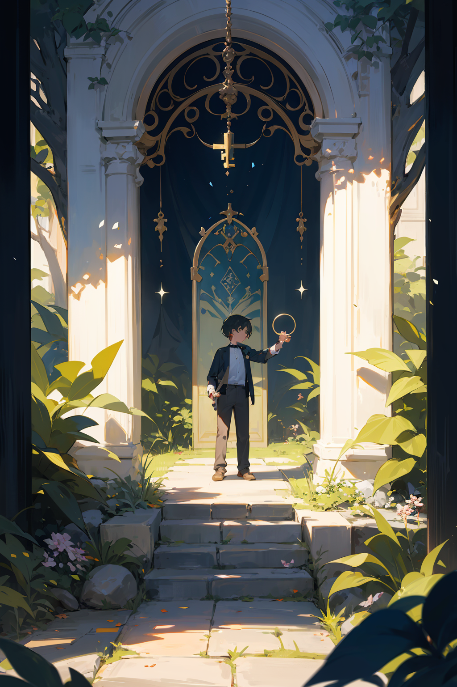

Capitulo 2
Con la llave en la mano y los ojos brillando con anticipación, Mateo avanzó hacia la antigua puerta de hierro forjado que se alzaba al final de la pradera. Sintió un zumbido suave y un cosquilleo mágico en sus dedos mientras la llave se acercaba a la cerradura.
Al insertar la llave en la cerradura, el jardín encantado pareció contener la respiración. El aire vibró con energía, y las flores a su alrededor inclinaron sus pétalos como en un saludo mágico. Con un giro suave, la llave activó la cerradura y, como respuesta, la antigua puerta se abrió lentamente.
Un resplandor deslumbrante emanó del umbral, revelando un portal mágico que conducía a un reino desconocido. Colores vivos y destellos de luz danzaban en el otro lado, como si el jardín encantado se expandiera hacia dimensiones infinitas. Un suave viento, cargado de fragancias exóticas, sopló desde el portal, invitando a Mateo a cruzar el umbral hacia lo desconocido.
Con valentía y emoción, Mateo dio el primer paso a través del portal, sintiendo cómo la magia envolvía su ser. La puerta se cerró con suavidad detrás de él, dejando atrás la pradera conocida para sumergirse en un mundo de maravillas y misterios que aguardaban ser explorados en el vasto y encantado jardín que se extendía más allá.
